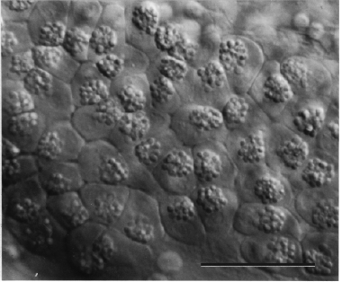

Modified from: Kimmel et al., 1955. Developmental Dynamics 203:253-310. Copyright © 1995 Wiley-Liss, Inc. Reprinted only by permission of Wiley-Liss, a subsidiary of John Wiley & Sons, Inc.
Fig. 32. Cells of the hatching gland, present on the pericardium over the anterior yolk sac have prominent granules during the pharyngula period. Later they lose the granules, presumably due the release of hatching enzymes. Nomarski view at the prim-15 stage (30 h). Scale bar: 50 µm.

Figure 32